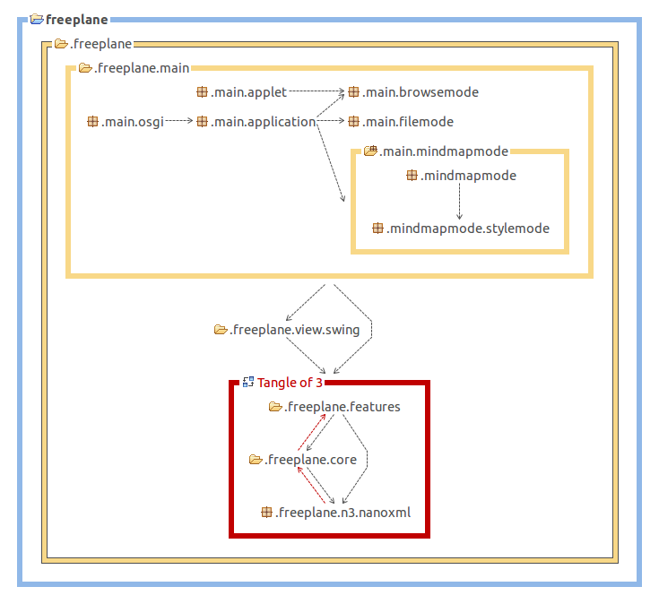
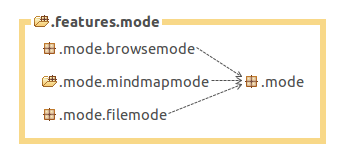

Top level projects
Freeplane is a Java Swing application that has two major variants:
- Standalone desktop application (full functionality)
- This is the application most people know.
- The distribution contains also a Portable version of the desktop application. It's just a different style of packaging the application to make it portable on USB sticks etc. but it's not another application.
- Browser applet (limited functionality)
The desktop application architecture is based on the OSGi framework. It uses Knoplerfish version 2.3 as OSGi implementation.
The fact that Freeplane is build on OSGi has the following consequences:
- All of Freeplane's components are packaged as OSGi bundles (aka "plugins").
- Freeplane is launched in two steps:
- The OSGi kernel, which is an external library, is configured and launched by Launcher.
- The kernel initiates loading of all plugins.
The browser applet does not use functionality contributed by the plug-ins.
Projects
All major components have their own project (toplevel directory in the version control system and an Eclipse project) and they are build into separate JARs.
freeplane
freeplane_mac
freeplane_plugin_bugreport
freeplane_plugin_help
freeplane_plugin_latex
freeplane_plugin_script
freeplane_plugin_script_test
freeplane_plugin_svg
All Freeplane projects but freeplane build a single plugin.jar (freeplane builds one plugin consisting of four JARs):
$ cd "/Program Files/Freeplane"
$ find . -name [pf][rl]\*.jar -o -name \*.MF
core/org.freeplane.core/lib/freeplaneeditor.jar
core/org.freeplane.core/lib/freeplanemac.jar
core/org.freeplane.core/lib/freeplaneosgi.jar
core/org.freeplane.core/lib/freeplaneviewer.jar
core/org.freeplane.core/META-INF/MANIFEST.MF
framework.jar
plugins/org.freeplane.plugin.bugreport/lib/plugin.jar
plugins/org.freeplane.plugin.bugreport/META-INF/MANIFEST.MF
plugins/org.freeplane.plugin.latex/lib/plugin.jar
plugins/org.freeplane.plugin.latex/META-INF/MANIFEST.MF
plugins/org.freeplane.plugin.script/lib/plugin.jar
plugins/org.freeplane.plugin.script/META-INF/MANIFEST.MF
plugins/org.freeplane.plugin.svg/lib/plugin.jar
plugins/org.freeplane.plugin.svg/META-INF/MANIFEST.MF
Startup sequence
The startup sequence begins with essentially the following command (compare freeplane.sh):
cd "/Program Files/Freeplane"
java \
-jar ./framework.jar" \
-xargs ./init.xargs"
(The remaining arguments are mainly used for Knoplerfish configuration and memory settings.) The JAR is the Knoplerfish implementation JAR and init.xargs contains the directory where the plugin lookup should start:
$ cat init.xargs
-istart org.freeplane.core
This tells Knoplerfish to load the org.freeplane.core plugin first. Knoplerfish inspects core/org.freeplane.core/META-INF/MANIFEST.MF for the Activator class of this bundle org.freeplane.main.osgi.Activator.
Knoplerfish then runs org.freeplane.main.osgi.Activator.start() which then performs all the remaining startup steps:
-
It creates an instance of org.freeplane.main.application.Freeplane which is responsible for the creation of controllers, actions, menus - short the complete basic application.
-
Then it loads the other plugins from directory plugins, one after the other, by creating them from by loading their JARs and starting them (see ActivatorImpl.loadPlugins())
// org.freeplane.main.osgi.ActivatorImpl.startFramework() starter = new FreeplaneStarter(); loadPlugins(context); final Controller controller = starter.createController();
Freeplane core design
Overview
Design aims for extendable set of packages with clear purposes and as few circular dependencies as possible.
Graphical overview over the package dependencies was created using structure analysis tool for Java stan4j. (Red lines show circular dependencies which are considered not good and demonstrate potential for improvement). 
.freeplane.features
Features implement bits of functionality assigned to a node, like an icon a note, an attribute etc, see [[#Features and their dependencies | below]].
.freeplane.view.swing
Renderers, user interface listeners and renderer specific features, see [[#Features dependent on rendering components | below]].
.freeplane.core
Utilities, classes and components used from different feature packages.
.freeplane.n3.nanoxml
XML Parser derived from nanoxml.
.freeplane.main
Application builders which put all parts together and start the application:
- .freeplane.main.application: application specific parts and main method for running freeplane without the osgi plug-ins.
- .freeplane.main.applet: freeplane applet specific parts. Runs only browsemode in an applet.
- .freeplane.main.osgi: osgi specific parts loading and starting the plug-ins.
- .freeplane.main.mindmapmode, .freeplane.main.browsemode, .freeplane.main.filemode: mode factories.
Features and their dependencies
.features.map and .features.mode
The architecture aims for minimizing dependencies between features. For extensible architecture central classes (MapModel, NodeModel, ModeController, ReadManager, WriteManager) do not have to know about all the particular features. They serve as a container for their extensions (like in "The expension objects" pattern by Erich Gamma). This principle however is not satisfied by some old features representing e.g. node text, icons and map URL used for map loading.
Mode Controllers manage set of actions available to the user in each of the freeplane modes: *MindMapMode *BrowserMode *FileMode
Mode specific packages can depend on their common package, other dependencies are not permitted.

Also there is a Controller which manages mode controllers themselves and mode independent actions like printing.
Feature implementation patterns
Typical feature design
A feature usually consists of different parts, as in org.freeplane.features.cloud:
- a contribution to the node model; it holds the actual data, like a text, a color etc. (CloudModel),
- a controller class that integrates the feature into the application by registering actions and listeners (CloudController),
- Position of actions in menu is specified in /freeplane/resources/xml/mindmapmodemenu.xml and other mode specific menu configuration files.
- a builder class that is able to serialize and de-serialize the model into XML, i.e. to store the model within the map (CloudBuilder) which should register itself by >ReadManager and >WriteManager,
- If a feature supplies own filter / find conditions it should register class implementing .features.filter.condition.IElementaryConditionController at ConditionFactory from the same package.
- a view which displays the element in a map; it is often implemented in a separate java package e.g.org.freeplane.view.swing.map.cloud,
- Editing operations are implemented in a sub package adding MCloudController with some actions. Mode independent feature packages must not depend on the mode specific parts.
Mode specific packages can depend on their common package, other dependencies are not permitted.

Framework class PersistentNodeHook
As an alternative to implementation of a feature as a package some easy extensions can be implemented as a class extending PersistentNodeHook which provides implementations of controller, builder and model. It creates an extension with xml compatible with FreeMind so that FreeMind can ignore it and load the map. The extension can be declared as related to a map or to a node.
Looks at classes from the type hierarchy given below for examples.

Features independent on rendering components
Features with models and controllers not depending on view components with their interdependencies.

Features dependent on rendering components
Some features depend on view elements. They are defined here.

TODO: to be continued...
Plugins
Structure of a plugin
A plugin is defined by its MANIFEST.MF, here an extract from the org.freeplane.core plugin (core/org.freeplane.core/META-INF/MANIFEST.MF):
Bundle-Name: org.freeplane.core
Bundle-Version: 1.0.1
Bundle-ClassPath: lib/freeplaneviewer.jar,
lib/freeplaneeditor.jar,
lib/freeplanemac.jar,
lib/freeplaneosgi.jar,
lib/commons-lang-2.0.jar,
lib/forms-1.0.5.jar,
lib/gnu-regexp-1.1.4.jar,
lib/SimplyHTML.jar,
lib/jortho.jar
Bundle-Activator: org.freeplane.main.osgi.Activator
Import-Package: org.osgi.framework
Export-Package: org.apache.commons.lang,
org.freeplane.core.addins,
org.freeplane.core.controller,
[...]
org.freeplane.view.swing.ui.mindmapmode
This defines the class path that is available within the bundle (Bundle-ClassPath), its version (versioning support is an important feature of OSGI), the list of packages that this plugin exports to others (Export-Package) and the Activator class of the bundle (Bundle-Activator).
The simplest OSGi plugin just needs a single class, the Activator class. If it should do some work then it should define an action, hooks them into the menu. So most of the work of creating a plugin will be spent setting up the directory/project structure.
Freeplane plug-in registers its factories as services IModeControllerExtensionProvider or IControllerExtensionProvider . They are called by Freeplane and can be used for installing themselves.
Freeplane Plug-ins are organized like [[#Typical_feature_design | features]] or [[#Framework_class_PersistentNodeHook | hooks]]. They can add their actions to menus and install their options into preferences panel from xml resources using methods ModeController.updateMenus(URL), OptionPanelBuilder.load() and other Methods of OptionPanelBuilder and MenuBuilder.
Look at existing plug-ins and core for examples.
Create a new Plugin
A simple tool helps to get started with plugin development. It's an Ant Task named 'create-plugin' that is available from the freeplane_framework/ant directory. The task reads all required parameters from the command line. (If you want to do it non-interactively you have to create your own Ant task.)
See Plugin development for details.